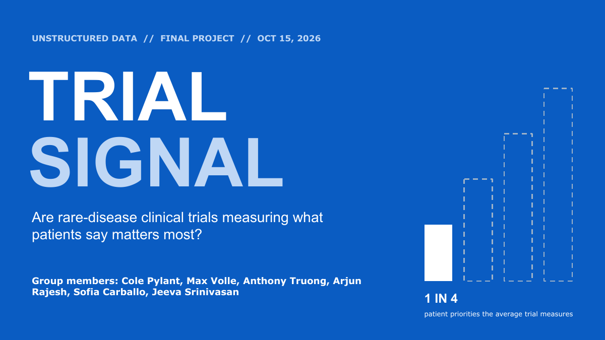

NLP · Retrieval · Healthcare Analytics
TrialSignal
A clinical-trial analytics pipeline comparing registered endpoints with patient-identified priorities using semantic retrieval, structured model judgment, and deterministic scoring.
View case study →